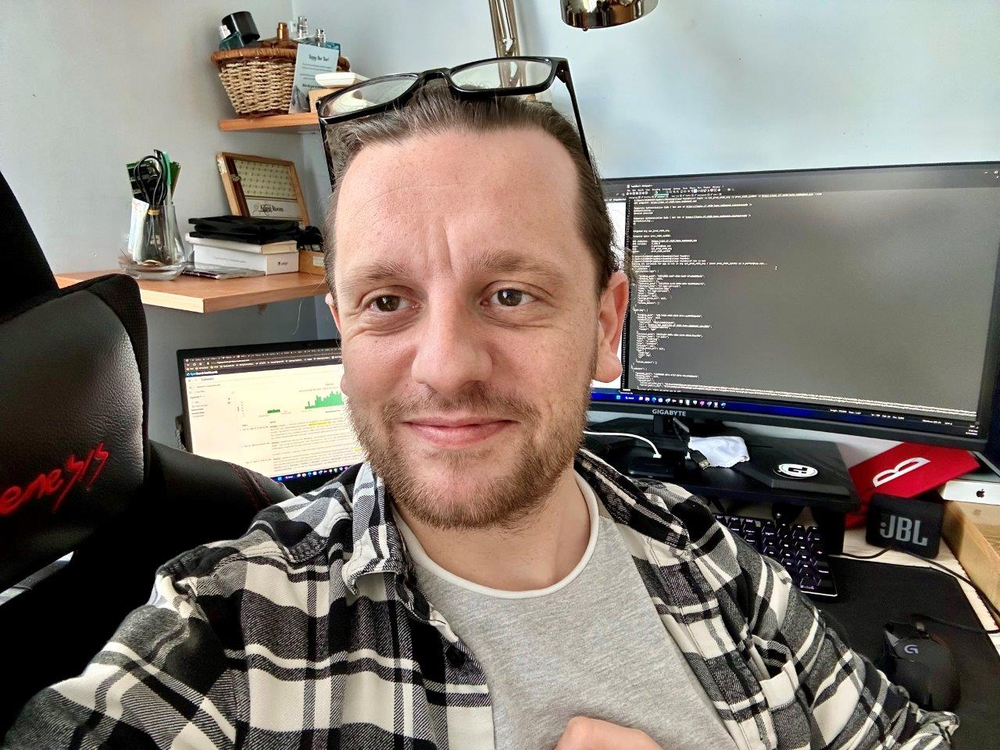

Dimitar Porkov
Cloud Operations Engineer for SAP
About Me

As a SAP CI Operations professional at Digitall, I specialize in Cloud Technologies with a strong foundation in CI/CD methodologies. With over three years of cloud experience and five years total in the field, I support development teams in delivering reliable and scalable solutions.
Career Highlights
- Transformative Migration Projects: Played an important role in major migration initiatives for Johnson Controls International (JCI) and Tyco Industries as part of technical support.
- Strategic System Transitions: Contributed to SAP's OneStrike and Apache Camel 3.x migrations, collaborating with development teams to ensure smooth transitions.
Beyond the Desk
- Cycling for fitness and focus
- Traveling to explore new cultures
- Running self-hosted applications in my home lab
Experience & Projects
Cloud Operations Engineer
Company: Digitall | Period: December 2022 – Present
I manage and support the SAP NEO environment across multiple global data centers, overseeing 20+ landscapes.
I work across Google Cloud, Microsoft Azure, Alibaba Cloud, and AWS using Cloud Foundry to deploy and scale applications.
Key contributions include SLES 15 and Apache Camel 3.x migrations, automation with Jenkins and no-code solutions like Automation Pilot, and post-mortem analysis to improve platform reliability.
Key Responsibilities:
- Advanced troubleshooting and log analysis
- Supporting development teams with CI/CD workflows
- SLA-driven support and incident resolution
- Monitoring, recovery, and performance tuning
Previous Experience
Technical Support Analyst
Company: Akkodis | Period: November 2019 – December 2022
Throughout my career, I've been fortunate to be part of transformative projects that have shaped the technological landscape of major industries. Working with Modis, I played a critical role in the mass migration initiatives for JCI (Johnson Controls International) and Tyco Industries, where I gained invaluable experience in large-scale data migrations and systems integration. These projects demanded a deep understanding of infrastructure, meticulous planning, and a collaborative approach to ensure seamless transitions without disrupting business operations.
Through these experiences, I've developed a strong skill set in project management, data migration strategies, and cross-functional teamwork. Being able to contribute to such pivotal projects has fueled my passion for innovation and has solidified my commitment to driving impactful technological solutions in every organization I serve.
Contact
Phone: +359 898 595 251
Email: dimitar@dporkov.tech
LinkedIn: dporkov